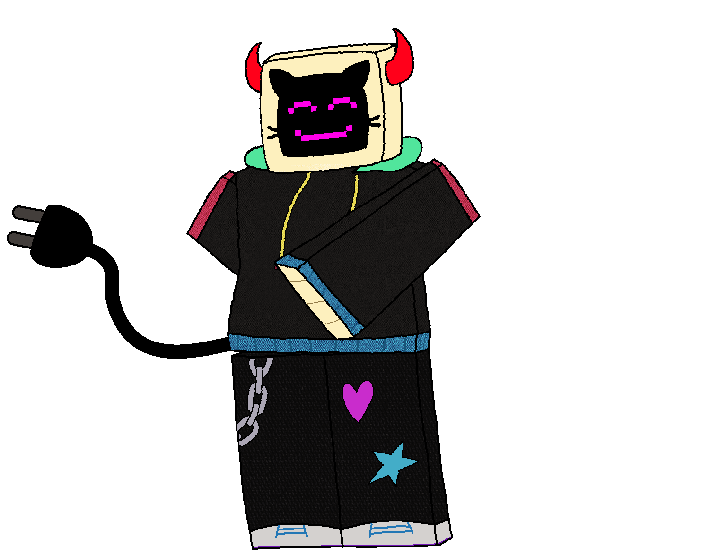
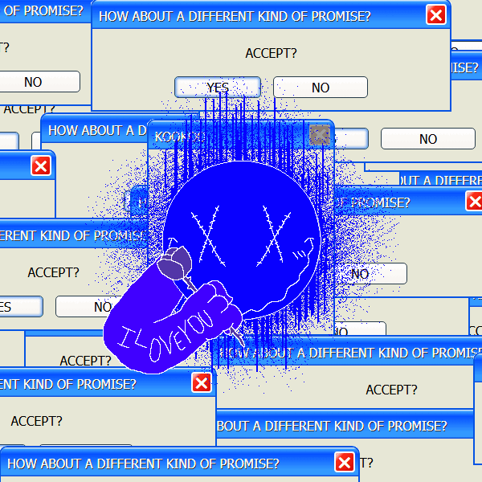

Abigail Hitchcock
Digital artist • 3d artist • Coder
Get to know me
Hello, I'm Abigail, and welcome to my portfolio!
I coded this whole thing myself! (you can probably tell)
I love to spend my time gaming, usually on games like
Satisfactory,
Minecraft,
Cult of the Lamb, and
Roblox.
Whenever I'm not gaming, I'm usually drawing! I use Krita for all
my artworks! On the rare occasion I'm not drawing either, I like to mess around in
Blender, though I'm not too great at it (likely from being mostly self-taught).
And of course, being a coding student, I have my fair share of applications and other coding projects I've worked on.
While I don't have a wide range of coding projects to show off, I aim to create some passion projects over the coming months.
Here's a little image of me, I want you to have it.

Contact
If you really really need to contact me, the best way to get in contact is via my discord:
abbigail_nitr0
Rigged Model
During my last year of highschool, I had the priviledge of having the same teacher for both
film and game design class (which were back to back). My teacher, being the coolest guy ever,
let me learn blender across those 2 class periods for most the school year.
During that time, I managed to not only model but also rig a 3d model of one of my characters.
Below is an image of the finished rig, in all it's somewhat decent glory.

Click here to see some drawings of Zyrna (that's his name by the way)
Here's some of the more defined concept art

Here's what Zyrna would look like if he worked out.

Here's Zyrna being told he's useless by his evil dad

Here's a short comic poking fun at Zyrna's unusual design

Basic Model
Inspired by random post off twitter and my own ideas, I made a little computer character named
Daisy. A little while after I drew her for the first time, inspiration struck and I began to f
rantically make a 3d model of her
Here's the textured model, which was made in just one afternoon!
Click here to see some drawings of daisy
Here's the first drawing of her!

Here's a drawing of her enjoying the stars!

Here's the texture used for her 3d model!

Artpiece
I don't have much to say here other than here's some of my best art pieces

Click here for more doodles
A cover for a comic strip I made involving a reoccuring character of mine

A short gif I made of my girlfriend's Roblox avatar
Another short gif I made of a roblox character
Collaborative Windows Form Application
Last and certainly least, this is a windows form application that acted as my final for my C# class in the Spring quarter of the 2024-2025 school year
The form acts as catalog for a car dealership, with filters, a comment section, a login screen, and a place to add your own listing.
The main thing I helped with was the bugfixing and general formatting for our final submission, so essentially just making it presentable.

Click here for one extra image
The login screen